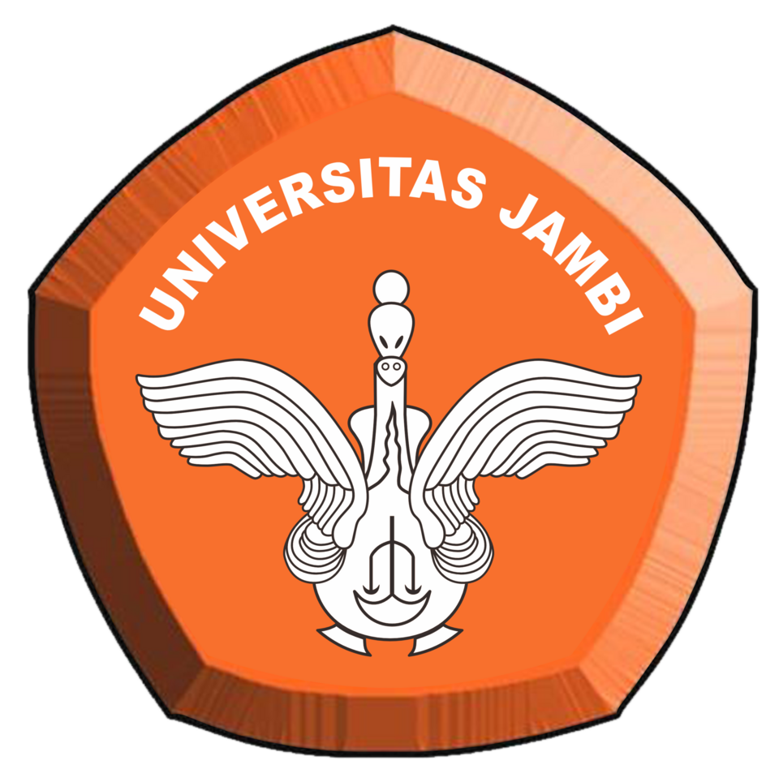
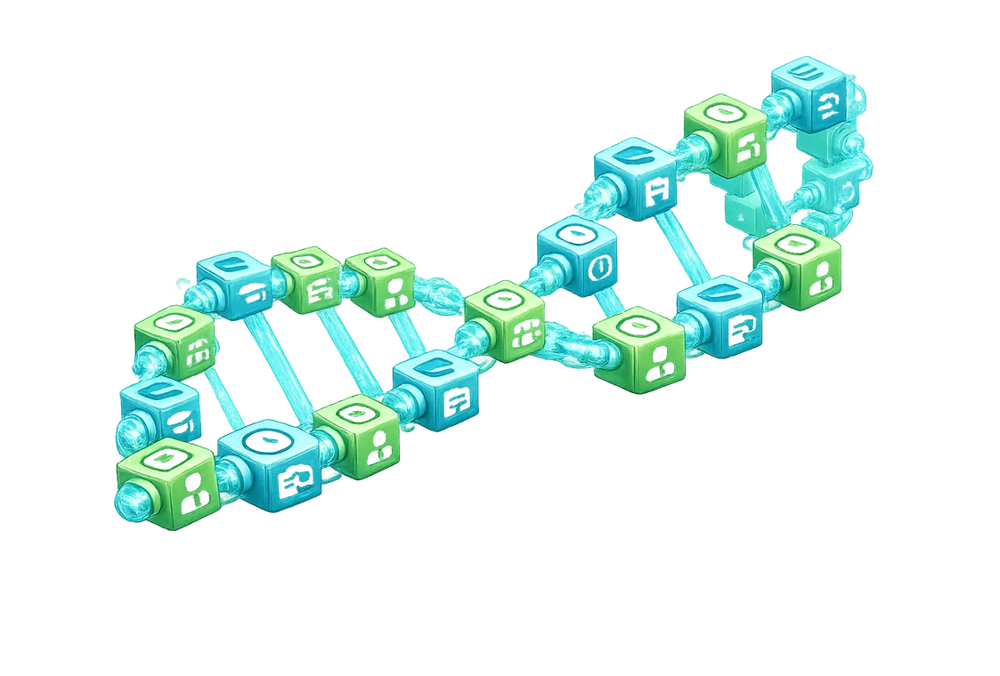
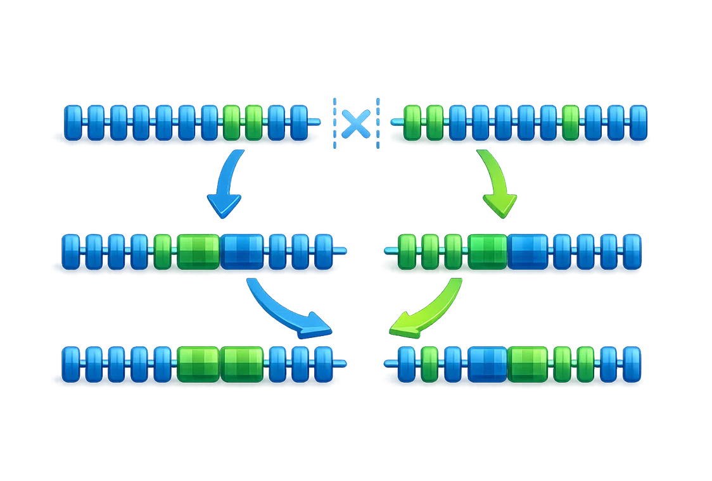
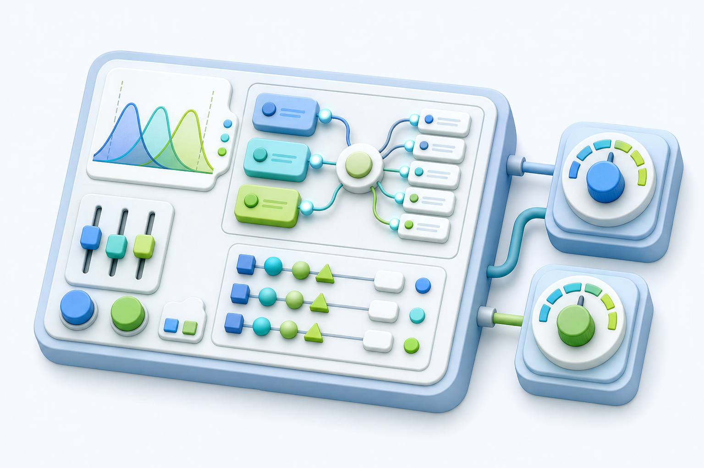
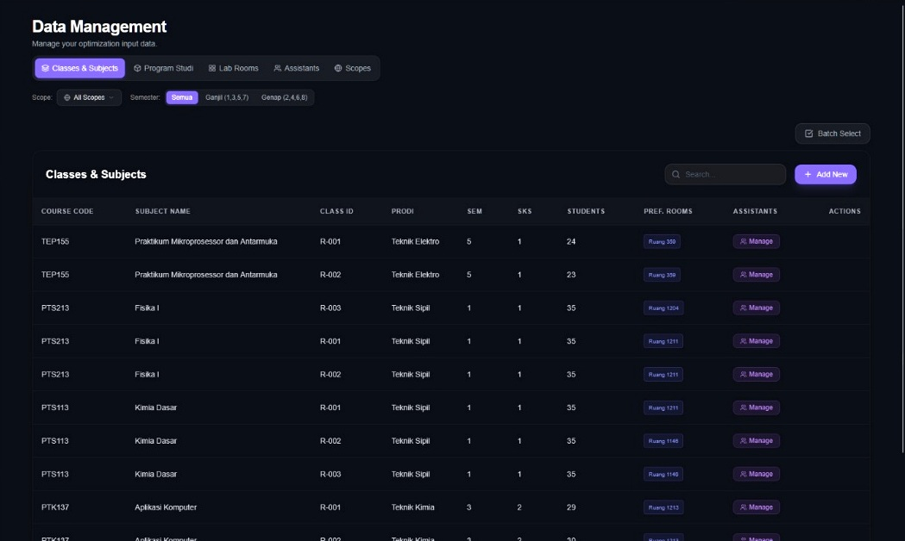
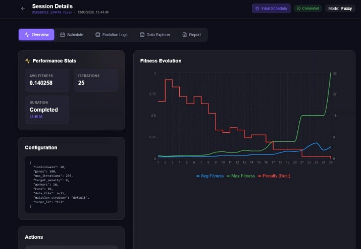
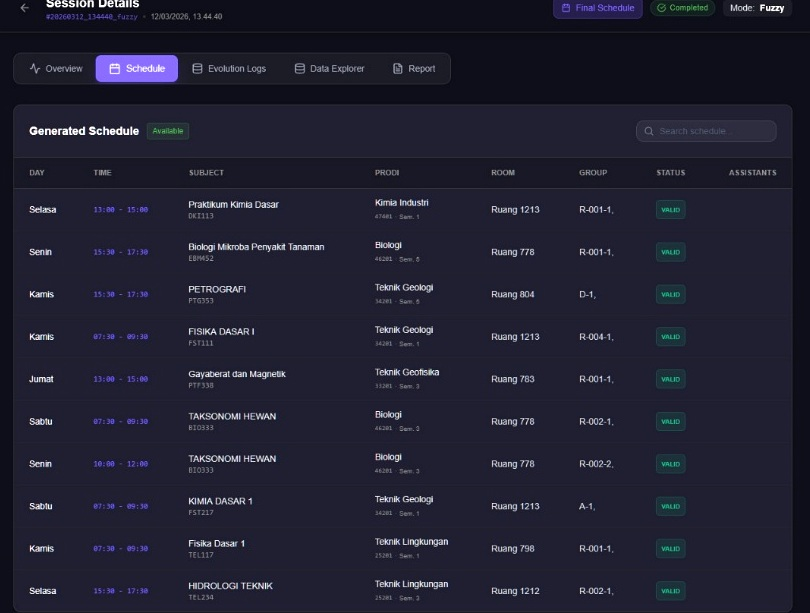

Pembimbing Utama
Pradita Eko Prasetyo Utomo, S.Pd., M.Cs.

Seminar Skripsi
Pradita Eko Prasetyo Utomo, S.Pd., M.Cs.
Mutia Fadhila Putri, M.Kom.
Agenda
Alur presentasi bergerak dari masalah praktikum, landasan teori, metodologi, hasil, hingga penutup secara runtut. Struktur ini menempatkan kontribusi penelitian sejak awal agar arah pembahasan mudah diikuti. Rujukan utama: (Yazid, 2025) dan (Pratama, 2025).
Masalah, tujuan, manfaat, dan kontribusi penelitian.
Penjadwalan, GA, fuzzy controller, dan penelitian terkait.
Representasi gen, populasi awal, fitness, operator, dan pipeline sistem.
Dataset, GUI, perbandingan Classic GA vs Fuzzy GA, dan implikasi.
Kesimpulan, saran pengembangan, dan sesi tanya jawab.
BAB I
Masalah praktikum muncul sebagai persoalan optimasi karena ruang, waktu, peserta, durasi, asisten, dan jadwal mata kuliah tatap muka/teori harus dipadukan dalam satu jadwal yang layak. Penyusunan manual perlu diganti dengan pendekatan yang lebih terukur agar konflik jadwal dapat ditekan. Rujukan utama: (Yazid, 2025) dan (Pratama, 2025).
Bab I
Praktikum FST tidak selalu mengikuti pola kuliah reguler karena durasi, ruang, dan ketersediaan asisten berbeda antar program studi. Penjadwalan perlu diperlakukan sebagai persoalan optimasi, bukan sekadar daftar waktu, agar praktikum tidak berbenturan dengan ruang, kelas, asisten, maupun jadwal mata kuliah tatap muka/teori. Rujukan utama: (Yazid, 2025) dan (Pratama, 2025).
Fokus kajian ini adalah penjadwalan praktikum laboratorium FST yang tidak selalu cocok dengan pola jadwal kuliah reguler.
Latar Belakang
Masalah penjadwalan praktikum muncul dari keterbatasan ruang laboratorium, slot waktu, kapasitas, kelompok kelas, asisten, dan jadwal mata kuliah tatap muka/teori. Jika komponen tersebut tidak disinkronkan, jadwal dapat menimbulkan bentrok ruang, bentrok kelompok, ketidaksesuaian asisten, atau benturan praktikum dengan mata kuliah tatap muka/teori. Rujukan utama: (Yazid, 2025) dan (Pratama, 2025).
Praktikum memiliki variasi durasi, sesi, dan kebutuhan ruang yang berbeda antar program studi.
Kalab, kaprodi, ruangan, kelas, asisten, dan jadwal mata kuliah perlu disejajarkan agar tidak terjadi bentrok.
Ruang laboratorium, slot waktu, kapasitas, dan ketersediaan asisten tidak selalu sebanding dengan kebutuhan.
Algoritma genetika dipakai untuk mencari kombinasi jadwal yang layak di ruang solusi yang besar.
Rumusan Masalah
Rumusan masalah dibatasi pada dua fokus utama: bagaimana GA berbasis Fuzzy Logic menyusun jadwal praktikum minim konflik dan bagaimana kontribusi fuzzy dibaca dari parameter evolusi. Fokus evaluasi mencakup bentrok ruang, kelompok, asisten, serta konflik ruang tatap muka ketika mata praktikum berbenturan dengan mata kuliah tatap muka/teori. Rujukan utama: (Yazid, 2025) dan (Pratama, 2025).
Bagaimana Algoritma Genetika dengan Fuzzy Logic meminimalkan bentrok ruang praktikum, mata kuliah tatap muka/teori, kelompok, dan asisten?
Bagaimana kontribusi Fuzzy Logic terhadap dinamika pencarian solusi, terutama pada parameter Cr dan Mr?
Tujuan dan Manfaat
Arah penelitian menyeimbangkan tujuan praktis dan akademik: sistem harus membantu pengelola laboratorium sekaligus menunjukkan penerapan algoritma optimasi pada penjadwalan. Manfaatnya diarahkan pada jadwal yang transparan, terstruktur, dan dapat dievaluasi ulang. Rujukan utama: (Yazid, 2025) dan (Noptrina et al., 2024).
Mengembangkan sistem penjadwalan laboratorium MIPA dan Teknik yang terstruktur dan transparan.
Mengoptimalkan penjadwalan agar terhindar dari konflik ruang, mata kuliah tatap muka/teori, kelompok, dan asisten.
Mengevaluasi kontribusi parameter adaptif berbasis Fuzzy Logic pada proses evolusi GA.
Data dibatasi pada laboratorium FST, jadwal praktikum, kapasitas, asisten, ruang, dan slot waktu.
Menjadi referensi penerapan algoritma optimasi pada manajemen pendidikan tinggi.
Membantu pengelola laboratorium menyusun jadwal yang lebih efisien dan dapat dievaluasi ulang.
Kontribusi
Skripsi ini tidak hanya menerapkan algoritma, tetapi juga membangun representasi jadwal, mekanisme adaptasi parameter, dan antarmuka evaluasi. Keempat kontribusi tersebut menjadi pembeda dari penjadwalan manual. Rujukan utama: (Triyono & Kusrini, 2024) dan (Azam et al., 2020).
Jadwal praktikum dimodelkan sebagai gen, kromosom, individu, dan populasi.
GA diterapkan pada data praktikum FST dengan constraint ruang, waktu, kelas, dan asisten.
Fuzzy Logic mengatur Cr dan Mr berdasarkan diversity dan stagnansi.
Sistem menyediakan konfigurasi run, monitoring fitness, dan laporan jadwal.
BAB II
Konsep penjadwalan, Algoritma Genetika, dan Fuzzy Logic langsung dipakai sebagai dasar sistem. Teori tersebut menjadi landasan representasi solusi, operator evolusi, dan controller adaptif. Rujukan utama: (Syahputra et al., 2024) dan (Triyono & Kusrini, 2024).

Bab II - Konsep Dasar
Penjadwalan adalah proses mengalokasikan sumber daya terbatas dalam waktu tertentu agar aktivitas berjalan teratur. Dalam penelitian ini, konsep penjadwalan menjadi fondasi karena praktikum membutuhkan pengaturan berbeda dari kuliah reguler, terutama pada penggunaan ruang laboratorium, slot waktu, dan ketersediaan asisten. Rujukan utama: (Syahputra et al., 2024) dan (Noptrina et al., 2024).
Penjadwalan, Algoritma Genetika, dan Fuzzy Logic menjadi fondasi penyelesaian masalah multi-constraint pada praktikum FST.
Penjadwalan mengatur ruang, waktu, kelas, peserta, durasi, dan asisten.
Jadwal harus mempertimbangkan kapasitas, ketersediaan, dan konflik antar kegiatan.
Penjadwalan menjaga kegiatan kuliah dan praktikum berjalan tertib.
Algoritma membantu mencari susunan yang lebih efisien dibanding proses manual.
Genetic Algorithm
Algoritma Genetika adalah metode komputasi evolusioner yang meniru seleksi alam melalui populasi, fitness, seleksi, crossover, dan mutasi. Metode ini relevan untuk penjadwalan karena mampu mengeksplorasi banyak kombinasi solusi ketika constraint saling bertentangan. Rujukan utama: (Zhou et al., 2020) dan (Triyono & Kusrini, 2024).
Kumpulan kandidat jadwal dibangkitkan sebagai calon solusi.
Setiap kandidat dinilai berdasarkan konflik dan penalty.
Kandidat terbaik lebih berpeluang menjadi parent.
Parent direkombinasi untuk menghasilkan kandidat baru.
Sebagian gen diubah agar pencarian tidak mandek.
Representasi Solusi
Kromosom merepresentasikan satu kandidat jadwal lengkap yang terdiri atas rangkaian gen. Pada penelitian ini, setiap gen menyimpan satu sesi praktikum beserta atribut mata praktikum, program studi, semester, peserta, ruang, hari, waktu, kelompok, dan asisten. Rujukan utama: (Triyono & Kusrini, 2024) dan (Zhou et al., 2020).
Dalam penelitian ini, satu kromosom merepresentasikan satu susunan jadwal praktikum lengkap.
Setiap gen menyimpan informasi satu sesi praktikum: mata praktikum, program studi, semester, peserta, ruang, hari, waktu, kelompok, dan asisten.

Tahap Awal GA
Pembangkitan kromosom membentuk populasi awal dari data praktikum, ruangan, slot waktu, dan asisten yang tersedia. Tahap ini dibuat acak tetapi tetap mengikuti batasan sistem, termasuk deteksi awal benturan praktikum dengan mata kuliah tatap muka/teori, agar individu siap dievaluasi oleh fitness function. Rujukan utama: (Triyono & Kusrini, 2024) dan (Zhou et al., 2020).
Mata praktikum, peserta, SKS, kelas, dan program studi menjadi basis pembentukan gen.
Sistem memilih ruang, hari, dan waktu berdasarkan kapasitas serta ketersediaan.
Benturan praktikum dengan mata kuliah tatap muka/teori ditandai sejak awal sebagai penalti menengah-tinggi.
Populasi awal tetap dibuat bervariasi agar pencarian solusi tidak terlalu sempit.
Evaluasi Solusi
Fitness Function mengubah kualitas jadwal menjadi nilai kuantitatif berdasarkan jumlah penalty konflik. Pelanggaran mencakup ruang, kelompok, asisten, serta konflik ruang tatap muka saat mata praktikum berbenturan dengan mata kuliah tatap muka/teori; semakin sedikit pelanggaran, semakin tinggi nilai fitness. Rujukan utama: (Triyono & Kusrini, 2024) dan (Pytel, 2025).
Ruang yang sama dipakai bersamaan, termasuk benturan praktikum dengan mata kuliah tatap muka/teori.
Asisten memiliki sesi yang saling tumpang tindih.
Kelompok atau kelas paralel mendapat jadwal bentrok.
Benturan praktikum dengan mata kuliah tatap muka/teori diberi penalti menengah hingga tinggi.
Operator GA
Crossover adalah operator rekombinasi yang menukar sebagian struktur dua parent untuk menghasilkan offspring. Dalam penjadwalan praktikum, operator ini harus menjaga struktur gen agar jadwal baru tetap valid dan tidak merusak atribut sesi. Rujukan utama: (Xue et al., 2021) dan (Han & Xiao, 2022).
Crossover menggabungkan informasi dari dua parent untuk membentuk jadwal baru. Pada konteks penjadwalan, operator ini harus menjaga struktur gen agar tidak menimbulkan kerusakan jadwal.
Operator GA
Mutasi memberi perubahan kecil pada gen agar populasi tidak cepat homogen dan tidak terjebak pada solusi lokal. Pada konteks jadwal, perubahan dapat berupa ruang, hari, atau waktu yang kemudian divalidasi kembali terhadap constraint. Rujukan utama: (Pytel, 2025) dan (Dockhorn & Lucas, 2022).
Mutasi mengubah sebagian kecil gen untuk memperluas eksplorasi dan menghindari solusi yang terjebak.
Perubahan dapat berupa ruang, waktu, atau atribut penjadwalan lain yang tetap divalidasi ulang.
Konteks Akademik
Penjadwalan akademik tidak hanya mengalokasikan waktu, tetapi juga mengatur ruang, kapasitas, dosen atau asisten, serta kebutuhan layanan pendidikan. Pendekatan berbasis sistem membantu mengurangi koreksi manual ketika data berubah. Rujukan utama: (Syahputra et al., 2024) dan (Irfan et al., 2022).
Jadwal akademik juga mempertimbangkan ruang, kapasitas, dosen/asisten, dan keteraturan proses belajar.
Penyusunan manual rawan bentrok dan membutuhkan koreksi berulang ketika data berubah.
Pendekatan algoritmik memungkinkan evaluasi banyak kombinasi jadwal secara sistematis.
Setiap jadwal dapat dinilai melalui metrik konflik, penalty, dan fitness.
Studi Terkait
Penerapan AG dalam penjadwalan menunjukkan bahwa mekanisme evolusioner dapat mengevaluasi banyak kombinasi jadwal dan memperbaiki solusi secara bertahap. Studi terdahulu menjadi dasar bahwa AG layak digunakan sebagai baseline optimasi pada kasus praktikum. Rujukan utama: (Irfan et al., 2022) dan (Syahputra et al., 2024).
AG sering digunakan untuk mencari kombinasi jadwal yang bebas bentrok pada institusi pendidikan.
Preferensi, kapasitas, ruang, waktu, dan jumlah peserta dapat dimodelkan sebagai constraint.
Solusi diperbaiki melalui seleksi, crossover, mutasi, dan evaluasi fitness.
Konteks Laboratorium
Penjadwalan laboratorium memiliki tingkat kesulitan lebih tinggi karena ruangan, alat, kapasitas, durasi sesi, dan ketersediaan asisten tidak selalu seragam. Karena itu, jadwal praktikum memerlukan model yang bisa membaca constraint operasional secara lebih rinci. Rujukan utama: (Noptrina et al., 2024) dan (Pratama, 2025).
Laboratorium memiliki kapasitas dan fungsi yang berbeda.
Sesi praktikum dapat berlangsung 2 sampai 4 jam.
Jumlah peserta memengaruhi pemilihan ruang.
Ketersediaan asisten menjadi constraint penting.
Fuzzy Logic
Fuzzy Logic memetakan nilai crisp menjadi derajat keanggotaan sehingga kondisi seperti rendah, sedang, dan tinggi dapat diproses melalui aturan linguistik. Dalam penelitian ini, fuzzy digunakan sebagai controller adaptif, bukan sebagai pengganti GA. Rujukan utama: (Alkhayyat et al., 2022) dan (Cao et al., 2024).
Fuzzy Logic memetakan nilai crisp menjadi derajat keanggotaan sehingga kondisi yang tidak tegas dapat diproses sebagai aturan.
Dalam penelitian ini, fuzzy digunakan sebagai controller adaptif, bukan sebagai pengganti GA.
Kondisi rendah, misalnya variasi populasi rendah atau stagnansi kecil.
Kondisi sedang, ketika sistem perlu penyesuaian moderat.
Kondisi tinggi, ketika controller memberi respons lebih kuat.
Hybrid Approach
Fuzzy Logic membuat GA tidak sepenuhnya bergantung pada parameter statis. Nilai crossover rate dapat membaca diversity dan stagnansi, sedangkan mutation rate membaca pergerakan fitness dari generasi sebelumnya ketika iterasi sudah berjalan. Rujukan utama: (Subburaj & Miruna Joe Amali, 2025) dan (Pytel, 2025).
Nilai fitness dan keragaman dibaca dari generasi berjalan.
Input dikonversi ke label linguistik.
Rule base menentukan respons parameter.
Nilai crisp Cr atau Mr dihitung.
GA melanjutkan crossover, mutasi, dan evaluasi.
Evaluasi HGA
Evaluasi HGA perlu dibaca melalui dua sisi: kualitas solusi akhir dan dinamika proses pencarian. Hasil adaptif tidak otomatis berarti unggul pada semua metrik, sehingga baseline Classic GA tetap diperlukan untuk pembacaan yang seimbang. Rujukan utama: (Mahmoudinazlou & Kwon, 2024) dan (Umam et al., 2022).
Dilihat melalui fitness, penalty, konflik, dan jumlah run yang mencapai solusi optimal.
Dilihat melalui konvergensi, stagnansi, dan perubahan parameter adaptif sepanjang generasi.
Classic GA digunakan sebagai pembanding agar kontribusi fuzzy dapat dibaca secara seimbang.
Hasil bukan klaim bahwa Fuzzy GA selalu unggul, melainkan pembacaan pada dataset dan konfigurasi eksperimen ini.
Sintesis
Masalah praktikum dihubungkan dengan representasi gen, pembentukan populasi, evaluasi konflik, dan pengendalian parameter adaptif. Data administratif diubah menjadi kandidat jadwal yang dapat dinilai secara komputasional. Rujukan utama: (Pytel, 2025) dan (Movassaghi & Avakh Darestani, 2022).
Penjadwalan praktikum memiliki banyak constraint.
GA mencari solusi, Fuzzy Logic mengatur Cr dan Mr.
Jadwal dinilai dengan fitness, penalty, dan konflik.
Research Gap
Penelitian terdahulu menunjukkan bahwa AG dan pendekatan fuzzy dapat digunakan pada penjadwalan kompleks, tetapi konteks FST memerlukan model data dan constraint lokal. Gap penelitian ini berada pada kombinasi jadwal praktikum, evaluasi GUI, dan fuzzy sebagai controller adaptif. Rujukan utama: (Marrouchi et al., 2024) dan (Movassaghi & Avakh Darestani, 2022).
Penelitian terdahulu menunjukkan AG efektif mengurangi bentrok jadwal dan mempercepat penyusunan.
Fuzzy digunakan pada beberapa studi untuk mengatur parameter evolusi dan mengurangi risiko stagnansi.
Konteks praktikum FST membutuhkan kombinasi model data lokal, constraint laboratorium, dan evaluasi GUI.
Penelitian ini membangun sistem, menguji Classic GA vs Fuzzy GA, dan memosisikan fuzzy sebagai controller adaptif.
BAB III
Data praktikum diubah menjadi struktur genetik, dievaluasi dengan fitness, lalu diproses oleh operator GA dan controller fuzzy. Alur ini menjadi jembatan dari data akademik ke jadwal akhir. Rujukan utama: (Azam et al., 2020) dan (Marrouchi et al., 2024).
Bab III - Tahapan
Metodologi penelitian disusun sebagai alur data-ke-optimasi: data dikumpulkan, direpresentasikan sebagai gen dan kromosom, lalu diproses melalui GA dan controller fuzzy. Hasilnya dievaluasi melalui fitness, penalty, konflik, konvergensi, dan tampilan sistem. Rujukan utama: (Azam et al., 2020) dan (Marrouchi et al., 2024).
Metodologi disusun dari pengumpulan data, representasi jadwal, pembangkitan populasi, evaluasi, operator genetika, fuzzy controller, implementasi, dan pengujian.
Memetakan teori penjadwalan, GA, Fuzzy Logic, dan penelitian terkait.
Mengumpulkan data mata praktikum, kelas, ruang, peserta, dan asisten.
Merepresentasikan jadwal sebagai gen, kromosom, individu, dan populasi.
Mengukur fitness, penalty, konflik, konvergensi, dan GUI.
System Pipeline
Aliran teknis bergerak dari data praktikum sampai laporan GUI. Seeder, fitness evaluation, operator GA, fuzzy controller, dan final schedule bekerja sebagai satu proses terpadu. Rujukan utama: (Azam et al., 2020) dan (Han & Xiao, 2022).
Repair Logic
Repair dan post-processing digunakan untuk menjaga kandidat jadwal tetap layak setelah operator evolusi menghasilkan perubahan. Tahap ini penting karena crossover dan mutation dapat memperbaiki eksplorasi, tetapi tetap perlu validasi constraint. Rujukan utama: (Xue et al., 2021) dan (Dockhorn & Lucas, 2022).
Cek ruang, mata kuliah tatap muka/teori, kelompok, asisten, dan slot waktu setelah kandidat jadwal terbentuk.
Pilih ruang atau waktu feasible dari daftar ketersediaan yang masih valid.
Jika waktu tidak valid, geser ke slot operasional yang aman untuk diperiksa ulang.
Jadwal hasil repair dikembalikan ke evaluasi fitness dan laporan GUI.
Model Data
Representasi jadwal sebagai kromosom memastikan setiap sesi praktikum dapat diproses sebagai struktur data tanpa kehilangan makna operasionalnya. Model ini menjadi jembatan antara data spreadsheet praktikum dan proses evolusi GA. Rujukan utama: (Triyono & Kusrini, 2024) dan (Zhou et al., 2020).
Satu sesi praktikum lengkap yang punya atribut jadwal.
Satu kandidat jadwal lengkap untuk seluruh praktikum.
Mata praktikum, kelas, ruang, hari, waktu, kapasitas, dan asisten.
Setiap kromosom dicek terhadap konflik ruang, mata kuliah tatap muka/teori, asisten, dan kelompok.
Initial Population
Inisialisasi populasi awal menentukan titik mulai pencarian solusi. Populasi perlu cukup feasible agar dapat dievaluasi, tetapi juga cukup beragam agar proses evolusi tidak cepat stagnan. Rujukan utama: (Triyono & Kusrini, 2024) dan (Zhou et al., 2020).
Penalty
Penalty menjadi dasar untuk mengukur seberapa jauh sebuah jadwal melanggar constraint utama. Konflik ruang, kelompok, asisten, dan benturan praktikum dengan mata kuliah tatap muka/teori dikonversi menjadi skor yang memengaruhi nilai fitness. Rujukan utama: (Triyono & Kusrini, 2024) dan (Pytel, 2025).
Ruang sama tidak boleh dipakai dua sesi pada waktu yang sama.
Praktikum yang berbenturan dengan mata kuliah tatap muka/teori diberi penalti menengah-tinggi.
Kelompok praktikum tidak boleh mendapat jadwal bentrok.
Asisten tidak boleh menangani dua sesi pada waktu yang bertabrakan.
Crossover
Rekombinasi antar parent menghasilkan offspring yang membawa pola jadwal dari dua kandidat solusi. Setelah crossover, repair diperlukan agar struktur jadwal tetap konsisten dengan constraint praktikum. Rujukan utama: (Xue et al., 2021) dan (Han & Xiao, 2022).
Parent dipilih dari populasi berdasarkan kualitas fitness.
Bagian kromosom parent ditukar untuk membentuk keturunan.
Keturunan membawa kombinasi susunan jadwal dari dua parent.
Kandidat diperbaiki kembali jika struktur jadwal menimbulkan konflik.
Diversity
Keragaman populasi menjaga pencarian agar tidak terkunci pada satu area solusi. Mutation rate adaptif membantu membuka variasi baru ketika fitness mulai stagnan atau individu terlalu mirip. Rujukan utama: (Pytel, 2025) dan (Dockhorn & Lucas, 2022).
Sebagian atribut jadwal diubah untuk membuka area pencarian baru.
Parent dipilih agar keturunan tidak terlalu homogen.
Perbaikan dilakukan tanpa membuat semua individu menjadi sama.
Mr meningkat saat stagnansi muncul dan turun saat pencarian stabil.
Adaptive Controller
Fuzzy pada crossover mendeteksi diversity dan stagnansi hasil crossover untuk menyesuaikan crossover rate. Keberagaman populasi dipakai sebagai sinyal scaling factor terhadap Cr; ketika rata-rata fitness rendah dan diversity masih luas, Cr dinaikkan agar ruang eksplorasi bertambah. Rujukan utama: (Subburaj & Miruna Joe Amali, 2025) dan (Pytel, 2025).
Keragaman populasi dan stagnansi hasil crossover menjadi sinyal untuk menaikkan atau menurunkan crossover rate.
Untuk iterasi lebih dari satu, perubahan skor fitness dari iterasi sebelumnya menjadi sinyal untuk mengatur mutation rate.
Parameter berubah mengikuti kondisi proses pencarian solusi.

Parameter Adaptif
Cr mengatur intensitas pertukaran genetik antar parent dengan membaca diversity dan stagnansi hasil crossover. Mr berbeda karena memakai pergerakan skor fitness dari iterasi sebelumnya pada iterasi lebih dari satu, sehingga mutasi mengikuti faktor pertumbuhan fitness. Rujukan utama: (Subburaj & Miruna Joe Amali, 2025) dan (Pytel, 2025).
Dipakai saat populasi masih perlu distabilkan dan eksploitasi solusi lebih penting.
Menjaga eksplorasi kombinasi jadwal tanpa membuat populasi terlalu acak.
Dinaikkan ketika rata-rata fitness rendah dan diversity masih luas agar eksplorasi kombinasi jadwal bertambah.
Dipakai saat fitness masih membaik sehingga eksploitasi solusi tetap stabil.
Dipakai saat sinyal stagnansi mulai terlihat dan pencarian perlu dorongan moderat.
Dipakai saat stagnansi kuat agar individu keluar dari area pencarian yang buntu.
Prototype
Evaluasi dan GUI membuat proses optimasi dapat dikonfigurasi, dipantau, dan diperiksa oleh pengguna. Dengan antarmuka ini, sistem tidak hanya berjalan sebagai skrip komputasi, tetapi juga mendukung analisis hasil jadwal secara visual. Rujukan utama: (Azam et al., 2020) dan (Marrouchi et al., 2024).

Mata praktikum, kelas, SKS, peserta, dan preferensi ruang.
Program studi, lab rooms, assistants, dan scopes tersimpan di GUI.
Data yang lengkap menjadi masukan untuk seeder populasi awal.
BAB IV
Skala dataset, implementasi sistem, dan perbandingan performa Classic GA dengan Fuzzy GA menjadi dasar pembacaan hasil. Fokus evaluasi diarahkan pada kualitas jadwal akhir serta dinamika proses pencarian solusi. Rujukan utama: (Yazid, 2025) dan (Noptrina et al., 2024).
Bab IV - Dataset
Rekap data praktikum FST menunjukkan ruang pencarian yang besar karena banyak program studi, mata praktikum, kelas, peserta, ruangan, dan slot asisten harus diatur bersama. Skala ini menjelaskan mengapa pendekatan optimasi lebih sesuai dibanding penyusunan manual. Rujukan utama: (Yazid, 2025) dan (Noptrina et al., 2024).
Hasil penelitian dibaca dari kelengkapan data, implementasi program, dan evaluasi performa Classic GA dibanding Fuzzy GA.
Implementasi
Implementasi program memisahkan seeder, fitness function, adaptive crossover, dan adaptive mutation agar proses evolusi mudah diuji per komponen. Struktur ini juga memudahkan pelacakan nilai fitness, penalty, Cr, dan Mr selama optimasi berjalan. Rujukan utama: (Azam et al., 2020) dan (Marrouchi et al., 2024).

Parameter run dibaca langsung dari konfigurasi optimasi.
Grafik memantau fitness, max fitness, dan penalty per generasi.
Cr dan Mr dapat ditelusuri melalui dinamika proses evolusi.
Evaluasi
Perbandingan Classic GA dan Fuzzy GA digunakan sebagai baseline pembacaan performa sistem. Hasil menunjukkan Classic GA lebih kuat pada beberapa metrik akhir, sedangkan Fuzzy GA membantu menurunkan rata-rata stagnansi maksimum. Rujukan utama: (Han & Xiao, 2022) dan (Ghaffar et al., 2022).
Implikasi
Evaluasi dan GUI membuat proses optimasi dapat dikonfigurasi, dipantau, dan diperiksa oleh pengguna. Dengan antarmuka ini, sistem tidak hanya berjalan sebagai skrip komputasi, tetapi juga mendukung analisis hasil jadwal secara visual. Rujukan utama: (Azam et al., 2020) dan (Marrouchi et al., 2024).

Tabel jadwal menampilkan hari, waktu, subject, ruang, group, dan status.
Label valid dan laporan GUI membantu pengguna meninjau ulang hasil akhir.
BAB V
Temuan utama menunjukkan sistem berhasil berjalan sebagai optimasi penjadwalan praktikum dengan controller adaptif. Fuzzy Logic berperan mengatur parameter, bukan sebagai klaim unggul mutlak atas Classic GA. Rujukan utama: (Triyono & Kusrini, 2024) dan (Ghaffar et al., 2022).
Bab V
Sistem penjadwalan praktikum berbasis GA berhasil dibangun dan diuji pada data FST. Fuzzy Logic diposisikan sebagai controller adaptif yang membantu dinamika pencarian, bukan sebagai klaim keunggulan absolut atas Classic GA. Rujukan utama: (Triyono & Kusrini, 2024) dan (Ghaffar et al., 2022).
Penelitian membangun dan mengevaluasi sistem penjadwalan praktikum berbasis Algoritma Genetika dengan Fuzzy Logic sebagai controller adaptif.
Gen dan kromosom berhasil memodelkan jadwal praktikum.
Fitness dan penalty membuat kualitas solusi dapat dihitung.
Fuzzy mengatur Cr dan Mr berdasarkan kondisi proses evolusi.
Kesimpulan
Representasi gen, fitness, penalty, dan fuzzy controller sudah bekerja dalam satu sistem penjadwalan. Pengembangan berikutnya diarahkan pada Greedy post-processing untuk memperbaiki konflik residual, integrasi data akademik, perluasan constraint, dan pematangan rule base fuzzy. Rujukan utama: (Triyono & Kusrini, 2024) dan (Zhou et al., 2020).
Data praktikum dapat direpresentasikan sebagai gen, kromosom, individu, dan populasi.
Classic GA unggul pada mayoritas metrik akhir seperti optimal run, avg fitness, dan penalty.
Fuzzy Logic membantu adaptasi Cr dan Mr, terutama untuk membaca stagnansi proses evolusi.
Q&A
Optimasi Algoritma Genetika Menggunakan Fuzzy Logic pada Penjadwalan Praktikum
NIM F1E122037 - Sistem Informasi